✦ 128 ГАЙДОВ
ПО ГРАММАТИКЕ
Разбираю, как здесь: истории, схемы, примеры. Без «откройте страницу 42». Падежи, местоимения, спряжение, времена — по порядку.
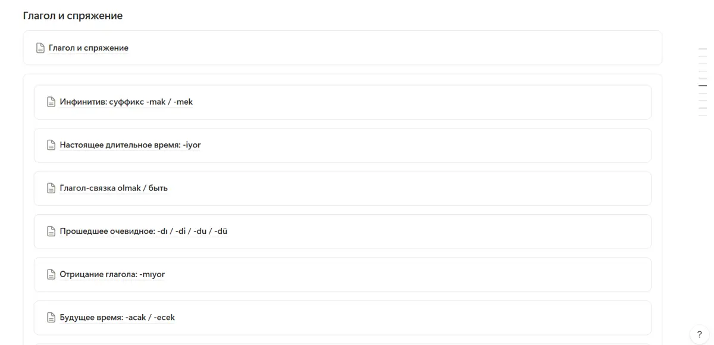
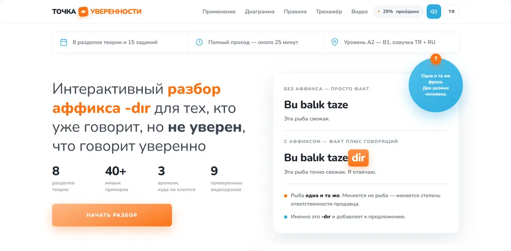
✦ турецкий · A1 → B1 · 12 минут чтения
Одно прошедшее время говорит: я видел. Другое: мне сказали. Разберём оба на историях. Потом соберём формы руками. Потом проверим себя.
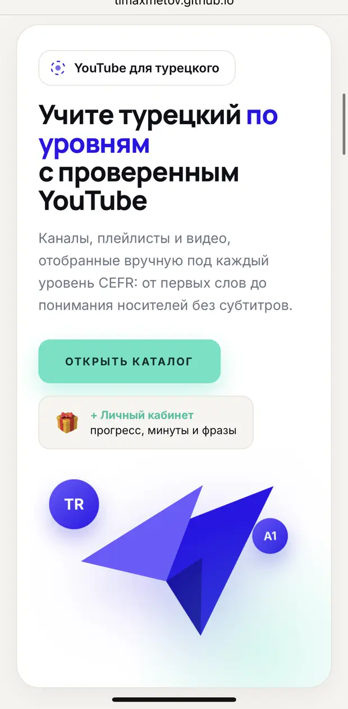
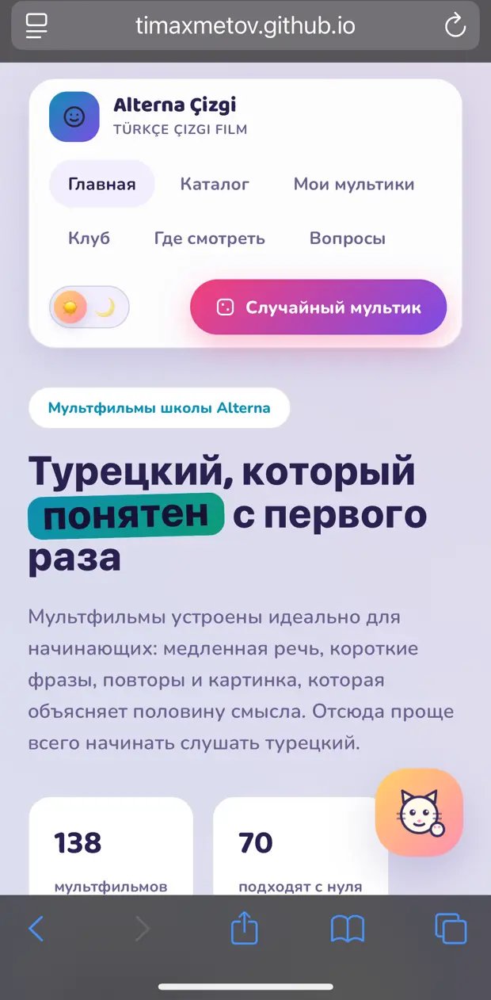
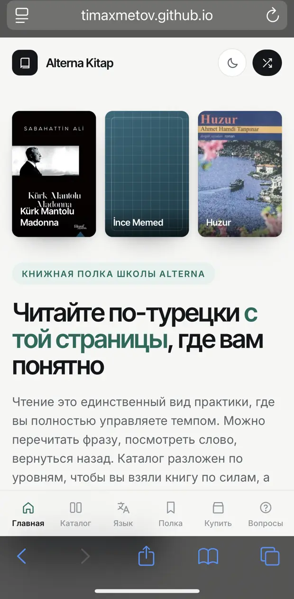
Я казах. Турецкий для меня как родственник. Дальний, но узнаваемый.
Слова похожие. Порядок слов похожий. Суффиксы липнут к слову, как у нас. Думаю, ну всё, изи.
Я поехал в Турцию. В Турции был TÖMER. На TÖMER был год турецкого. Год турецкого был полезный.
А потом выясняется, что прошедших времён два.
Не два, как в английском, где одно просто длиннее. Два с разной моралью.
Сидим на уроке. Ходжа спрашивает, dün ne yaptın?
Одногруппник говорит, dün sinemaya gitmişim.
Ходжа смотрит на него. Говорит, emin misin?
Одногруппник говорит, evet.
Ходжа говорит, то есть ты сам не знаешь, ходил ли ты в кино. Тебе кто-то рассказал.
Класс лежит.
Одногруппник говорит, я просто хотел покрасивее.
Покрасивее получилось. Как будто в кино его отвёл кто-то другой, а он узнал об этом утром. Из сторис.
Если вы говорите на казахском, у вас уже есть эта кнопка. Келді — это geldi. Келіпті — это gelmiş. Русскому такой разницы в глаголе не хватает, поэтому русскоязычным кажется, что это «одно и то же».
Турецкий глагол всегда сообщает, откуда вы это знаете. Нажмите на лепесток.
Otobüs gitti.
Автобус ушёл. Я стоял на остановке и смотрел ему вслед.
Нажмите на карточку, чтобы перевернуть.
Выберите глагол, лицо и режим. Форма соберётся по кусочкам, и под ней будет написано, почему именно так.
Глагол
Лицо
Тип предложения
e, i → i · a, ı → ı · o, u → u · ö, ü → ü
После ç f h k p s ş t ставим t: gitti, baktı, içti. Запомнить: FıSTıKÇı ŞaHaP.
m не превращается ни во что: baktı, но bakmış. Одним правилом меньше.
У -dı короткие окончания, как у притяжательности: -m, -n, -k. У -mış — «личные», как у настоящего времени: -im, -sin, -iz.
| Кто | -dı · видел | -mış · слышал |
|---|---|---|
| ben | geldim | gelmişim |
| sen | geldin | gelmişsin |
| o | geldi | gelmiş |
| biz | geldik | gelmişiz |
| siz | geldiniz | gelmişsiniz |
| onlar | geldiler | gelmişler |
-me/-ma встаёт сразу после корня.
Частица после личного окончания.
Окончание переезжает на частицу.
У меня была стажировка. Стажировка была в консульстве Казахстана в Анталье.
В Анталью приехал министр иностранных дел. На Дипломатический форум.
Я был там. Помогал с организацией.
Мама в Шымкенте узнала про форум из новостей.
Для меня это geldi. Для мамы — gelmiş. Министр один. Грамматика разная.
8 ситуаций. Выберите форму. После ответа — короткое объяснение.
✓ gittim. После t — глухое t. Турки на слух «gitdim» узнают мгновенно. Как мы узнаём «ложат».
✓ Dün okula gittim. Про свой обычный опыт — -dı. Иначе звучит как амнезия.
✓ geldim mi? У -dı частица mi пишется отдельно и стоит после окончания.
✓ gelmiş miyim? У -mış окончание уезжает на частицу: miyim, misin, mi, miyiz, misiniz. Только onlar остаётся: gelmişler mi?
✓ Öğrenci değildim. «Olmadım» — это «я не стал студентом». «Не был» — это değildim.
Разбираю, как здесь: истории, схемы, примеры. Без «откройте страницу 42». Падежи, местоимения, спряжение, времена — по порядку.


Не список слов, а то, что реально говорят. Знакомство, люди, семья, продукты, дом, кухня, время.
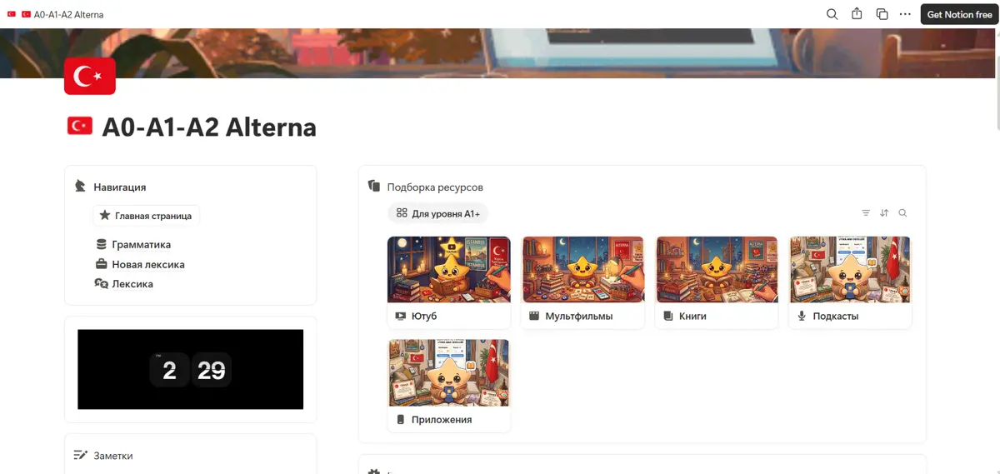
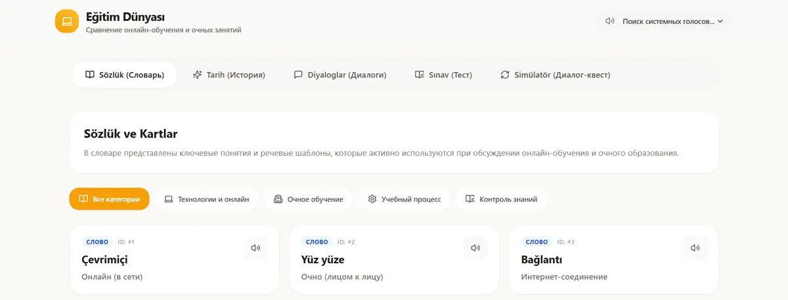
Слова, тексты, диалоги с озвучкой, аудирование, игры на запоминание, конструкторы форм.
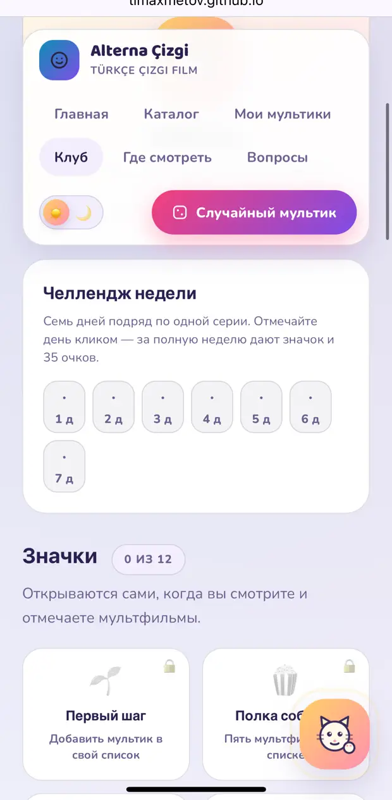
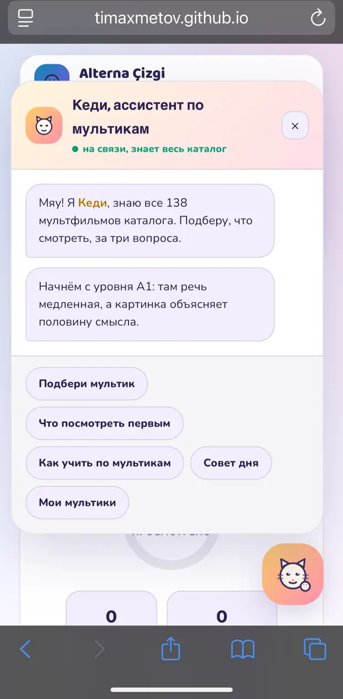
Не одна папка, а шесть отдельных миров. У каждого свой способ слушать и смотреть. Листайте.
70 подходят с нуля. Медленная речь, повторы, картинка объясняет половину смысла. Кот-ассистент Кеди подбирает мульт за три вопроса.
222 полнометражных фильма 1963–2025, разложены по CEFR: от детской анимации до авторского кино.
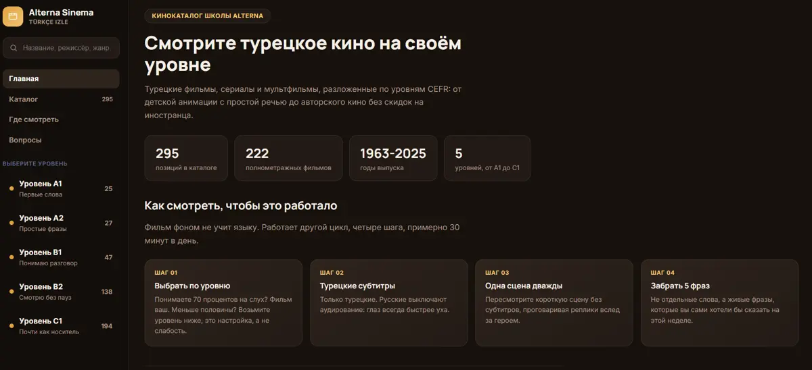
28 каналов, плейлисты и видео с рабочими ссылками. Проверено вручную. Плеер считает минуты в ваш прогресс.
Карта подкастов по уровню, формату и длине. Метод из четырёх шагов: слушать без текста, повторно, с транскриптом, повторить фразу.
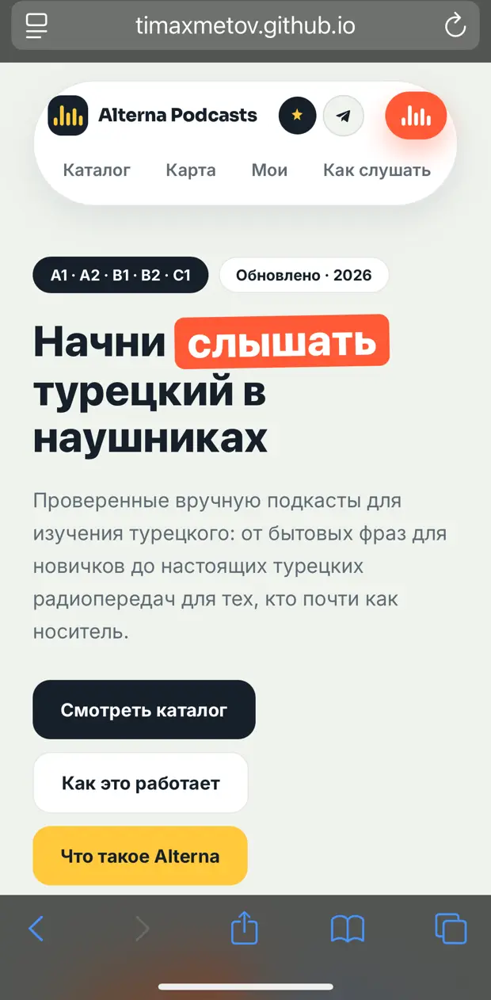
Слова из книг, тексты для чтения, лента истории языка: почему книга 1935 года читается тяжелее книги 1995-го.
72 полностью бесплатных. Не «зоопарк» из десяти, а связка: один курс, одни карточки, один словарь, один живой человек.
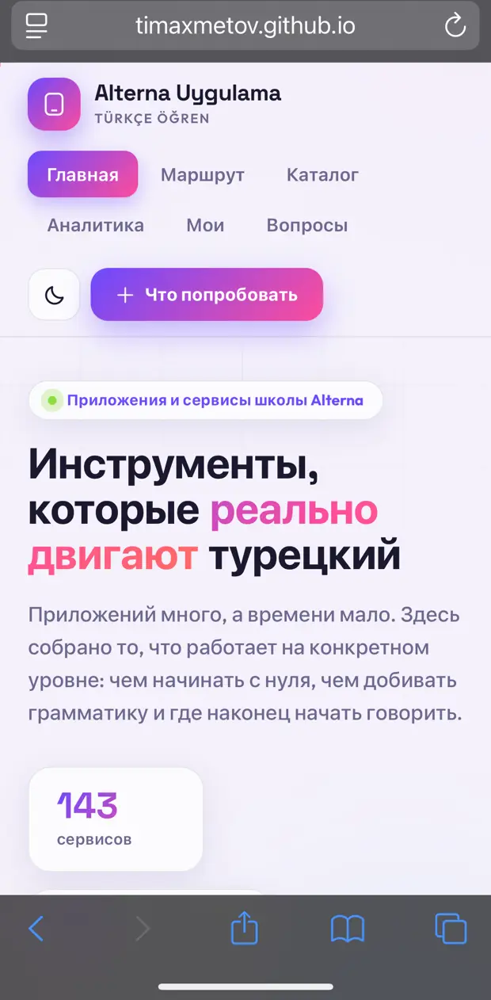
Выберите строку выше ↑
Материалы в интернете бесплатные. Время на их поиск — нет. Подставьте свои цифры.
Мы не знаем ваши цифры, поэтому ничего не придумываем: считает только то, что вы поставили.
Alterna A0 → C1. Один раз. Доступ навсегда.
Оплата через lava.top. Без подписки и автосписаний.
У меня было 40 вкладок. Во вкладках был турецкий. Турецкий был везде и нигде.
Я их разложил. По уровням. По темам. По форматам.
Вкладки я, кстати, закрыл.
С нуля. Для A0–A2 отдельный хаб, 70 мультфильмов подходят тем, кто не знает ни слова.
Нет. Это собранная система материалов и разборов. Идёте в своём темпе, прогресс отмечаете сами.
Платите $30 один раз, подписки нет. Доступ остаётся за вами.
Для личной полки и прогресса — нет, всё хранится в вашем браузере.
Отлично. Платформа закрывает практику между занятиями: что посмотреть, послушать и повторить на вашем уровне.